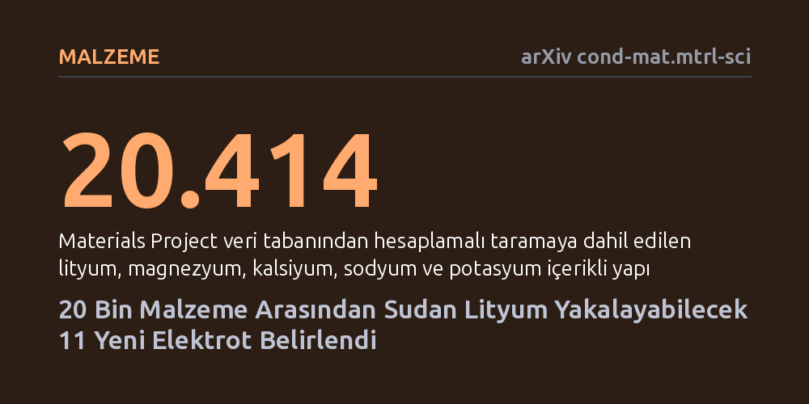

MALZEME · arXiv cond-mat.mtrl-sci · 2026-10-17
Araştırmacılar, sudan lityum gibi değerli iyonları yakalayabilen dayanıklı elektrotlar bulmak için 20 binden fazla kristal yapıyı bilgisayar simülasyonlarıyla taradı. Analiz sonucunda, mevcut kısıtları aşarak seçici lityum kazanımı sağlayabilecek 11 umut verici elektrot malzemesi belirlendi.
Lityum gibi kritik madenlerin geleneksel madencilik yerine deniz ve atık sulardan enerji tasarruflu elektrokimyasal yöntemlerle doğrudan geri kazanılabileceğini gösterir.

Doğal su kaynakları ve denizler sadece temel tüketim ihtiyacımızı karşılamakla kalmıyor; lityum gibi ileri teknoloji bataryalarında hayati önem taşıyan pek çok değerli iyonu da bünyesinde barındırıyor. Ancak bu iyonları sudan seçici olarak toplamak ya da suyu tuzdan arındırmak klasik yöntemlerle hem çok maliyetli hem de aşırı enerji gerektiren bir süreçtir. Katmanları arasına iyonları hapsedebilen özel elektrotların kullanıldığı elektrokimyasal yaklaşımlar, bu işlemi çok daha düşük enerjiyle ve verimli şekilde başarma potansiyeline sahiptir.
Buna karşın sahada çalışan pratik sistemler kurmanın önünde ciddi bir malzeme engeli bulunuyor. Günümüzde bu amaçla en çok denenen olivin yapılı demir fosfat veya spinel yapılı manganez oksit gibi mevcut elektrotlar, deniz suyunun agresif kimyasal koşullarında hızla çözünerek kararlılığını yitiriyor veya hedeflenen iyonları diğerlerinden yeterince ayıramıyor. Bu kısıtlamaları aşabilmek için daha dayanıklı ve kararlı yeni elektrot malzemelerinin keşfedilmesi kritik bir gereklilik haline gelmiştir.
Araştırmacılar, binlerce kimyasal bileşiği laboratuvarda tek tek üretip test etmenin getireceği devasa zaman ve kaynak kaybını aşmak için yüksek işlem kapasiteli hesaplamalı bir yöntem geliştirdi. Açık kaynaklı Malzeme Projesi (Materials Project) veri tabanından lityum, magnezyum, kalsiyum, sodyum ve potasyum içeren toplam 20.414 farklı kristal yapı taranarak başlangıç havuzuna dahil edildi.
Bu yapılar deniz suyu ortamındaki pH ve elektrokimyasal koşulları temsil eden Pourbaix diyagramlarıyla modellendi ve su içinde yapısal bütünlüklerini koruyup koruyamayacakları termodinamik olarak incelendi. Ardından elektrotların ortalama çalışma gerilimleri, yarı kararlılık dereceleri ve iyonları seçme kabiliyetleri özel hesaplama grafikleri ve algoritmalar yardımıyla kapsamlı bir süzgeçten geçirildi.
Yürütülen detaylı hesaplamalı tarama sonucunda, 20 bini aşkın yapı arasından seçici iyon geri kazanımı için 11 umut verici elektrot malzemesi ve tuz giderme için 1 potansiyel elektrot belirlendi. Özellikle Fe2(MoO4)3, Li3Fe2(PO4)3 ve LiFeP2O7 bileşikleri, lityum iyonlarını deniz suyundaki diğer yoğun iyonların arasından seçerek tutabilme konusunda en güçlü adaylar olarak öne çıktı.
Elde edilen sonuçlar, belirlenen bu elektrotların deniz suyu şartlarında termodinamik yarı kararlılıklarını sürdürebileceğini ve enerji verimliliği sağlayan gerilim aralıklarında çalışabileceğini gösterdi. Araştırmacılar makalede, bu çalışmanın "deneysel testler için umut verici bir elektrot listesi" sağladığını belirterek laboratuvar ölçeğinde yapılacak fiziksel denemeler için sağlam bir zemin oluşturduklarını vurguluyor.
Bu bulgular, temiz enerji teknolojilerinin merkezinde yer alan lityumun temininde geleneksel ve çevreye zararlı madencilik yerine deniz veya tuzlu su kaynaklarından elektrokimyasal olarak madencilik yapılabilmesi fikrine önemli bir teorik destek sunuyor. Taranan binlerce seçenek arasından filtrelenmiş bu odaklı liste, malzeme bilimcilerin laboratuvarda hangi malzemeleri sentezleyip test etmesi gerektiğine dair net bir yol gösteriyor.
Bununla birlikte, çalışmanın tamamen bilgisayar simülasyonlarına ve termodinamik kestirimlere dayandığı unutulmamalıdır. Önerilen elektrotların gerçek akışkan koşullarında, karmaşık kirlilikler içeren sularda uzun döngüler boyunca ne kadar verimli ve dayanıklı kalacağı ancak laboratuvar deneyleri ve pilot ölçekli uygulamalar yapıldığında kesinlik kazanacaktır.